Portfolio
The Gallery
Minnesota landscapes, wildlife, and seasons — browse by collection or view everything at once.

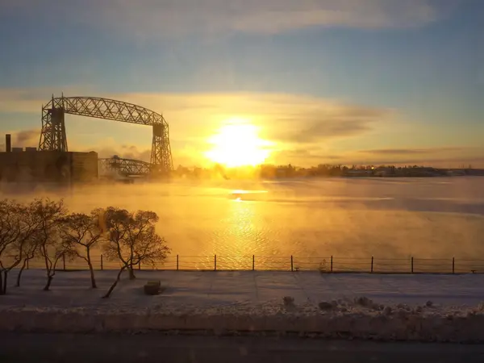

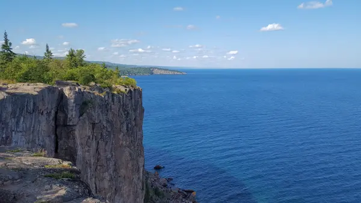

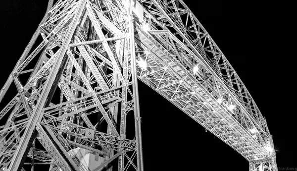

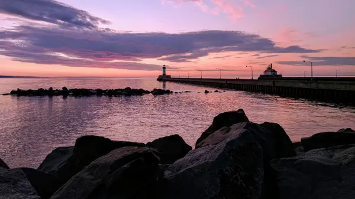

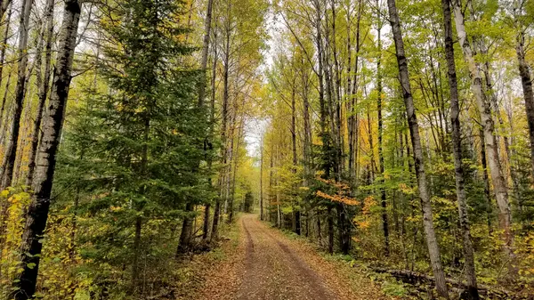

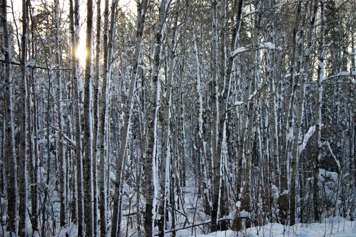

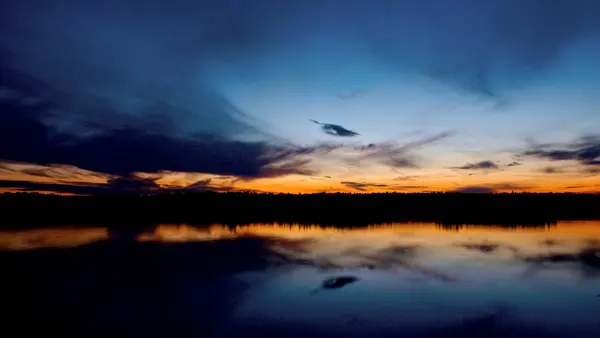


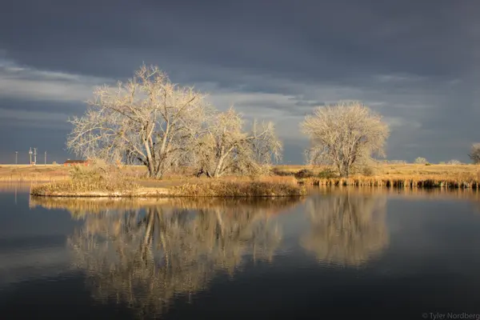

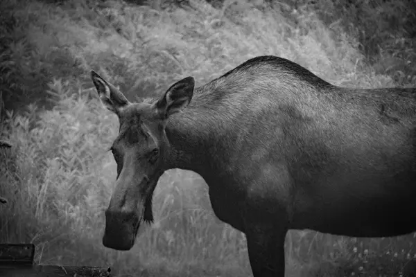

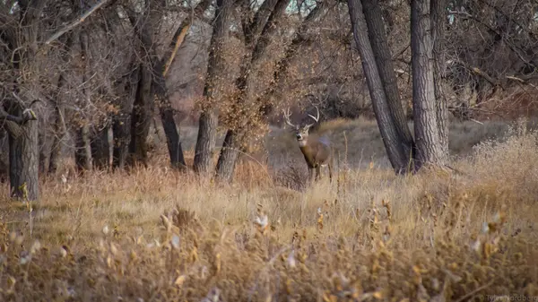

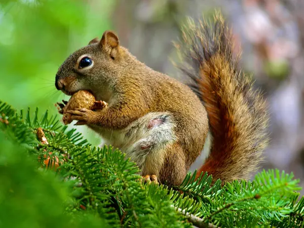

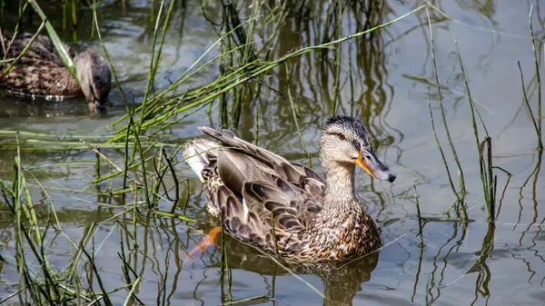

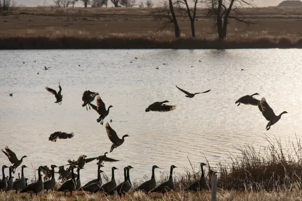

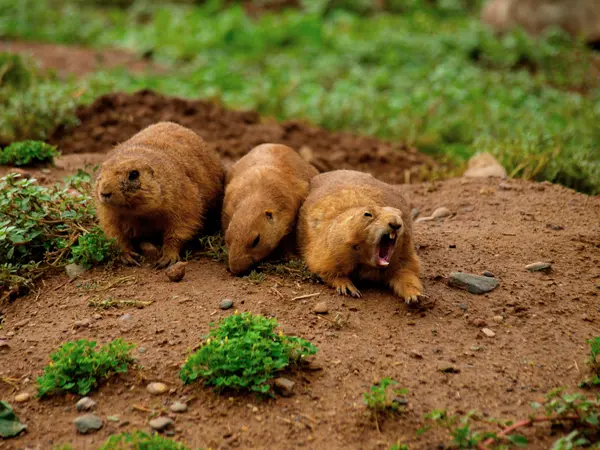

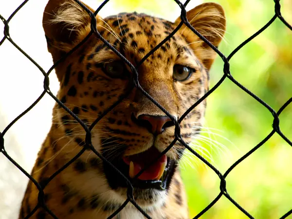

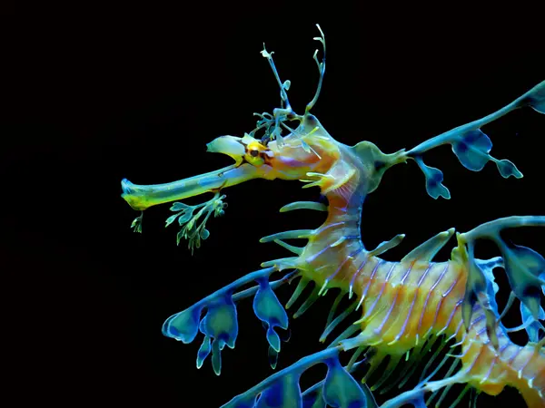

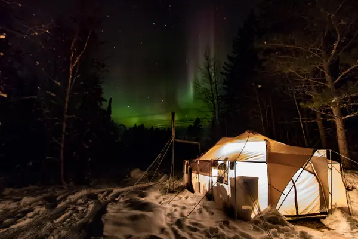

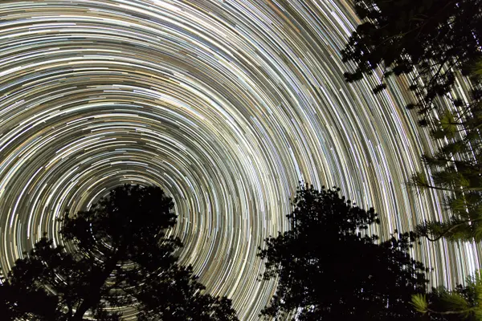

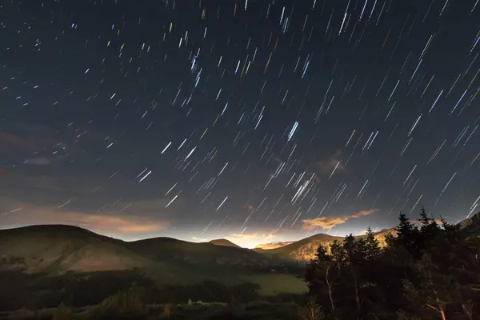

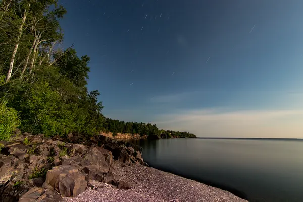


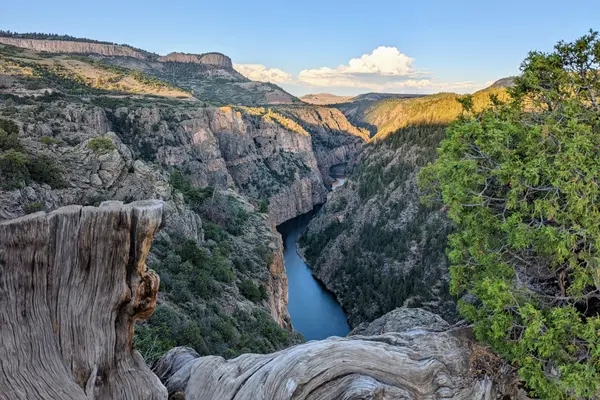

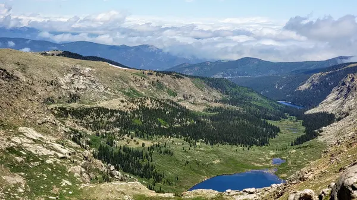

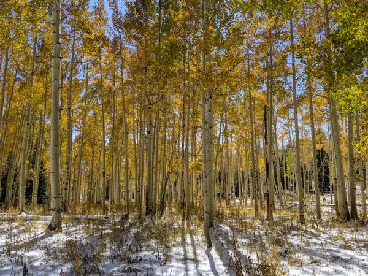

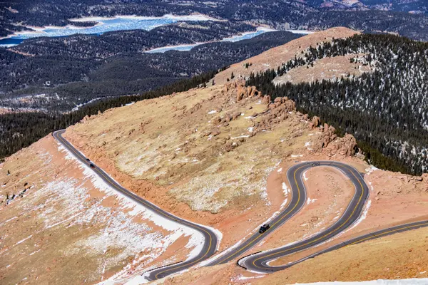

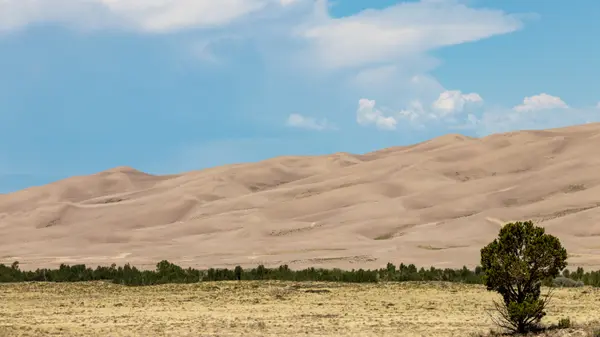

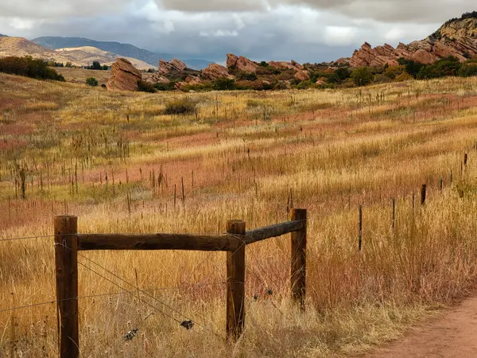

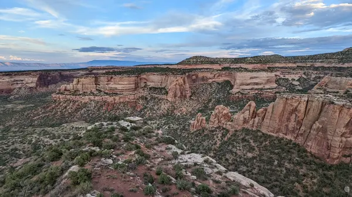

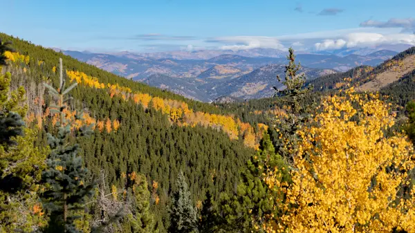

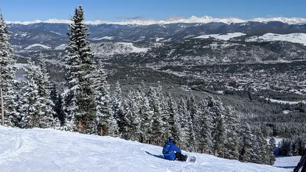

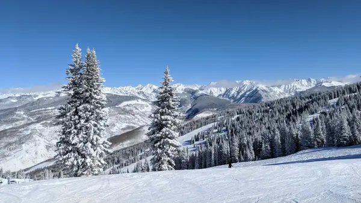

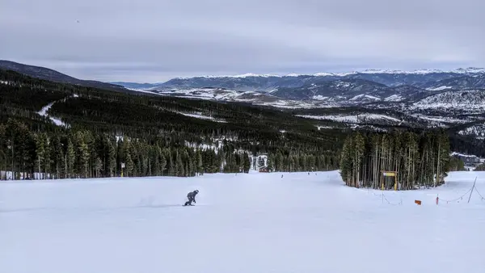

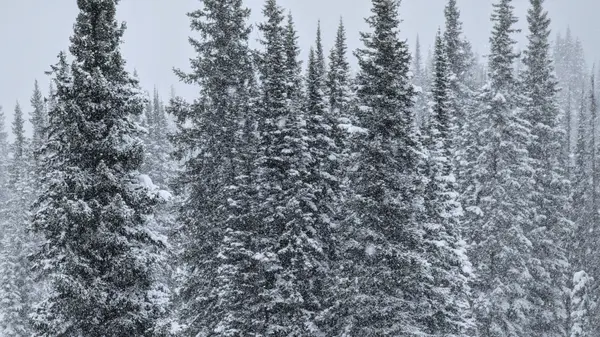

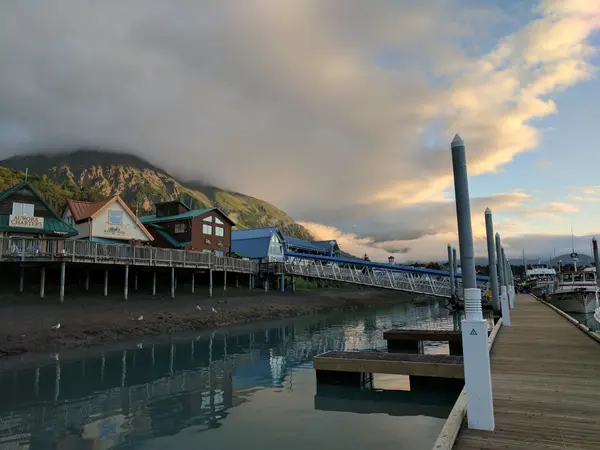

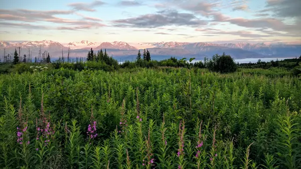

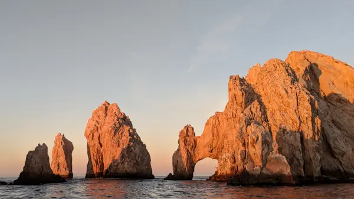

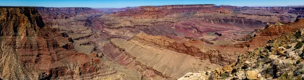

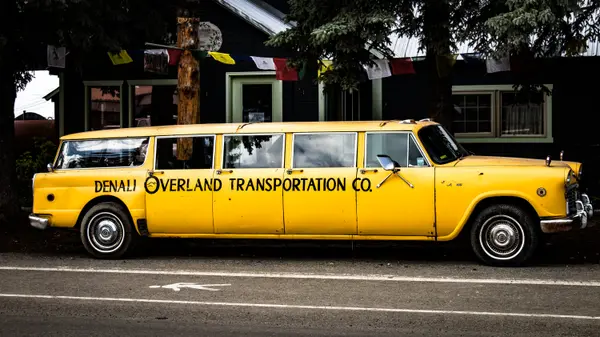

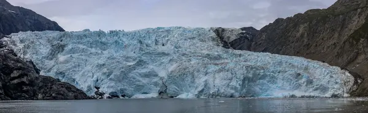

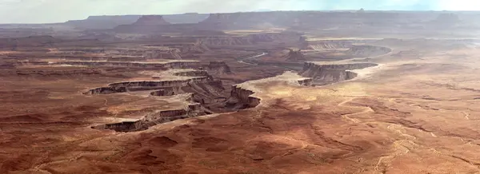

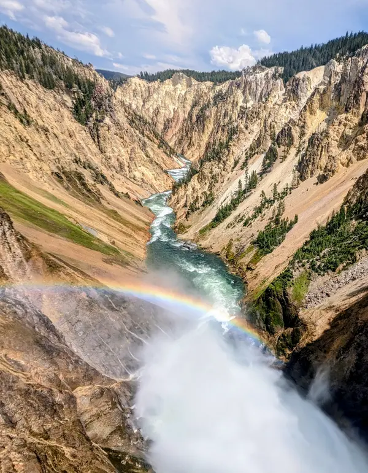

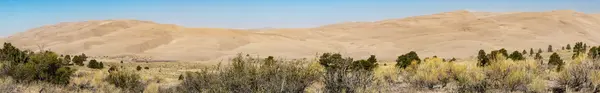

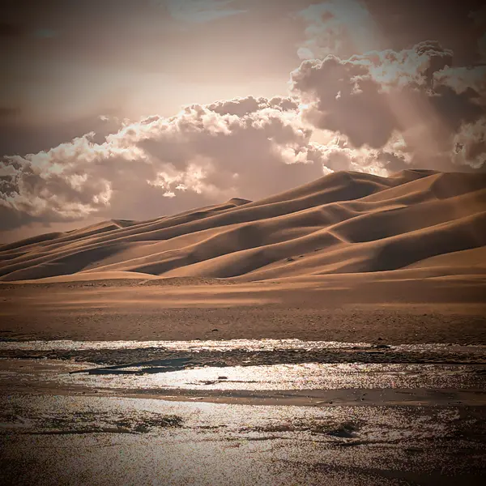

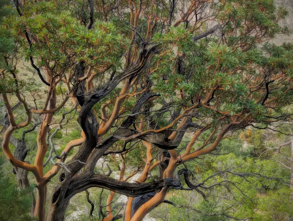

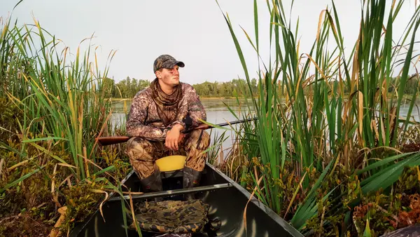